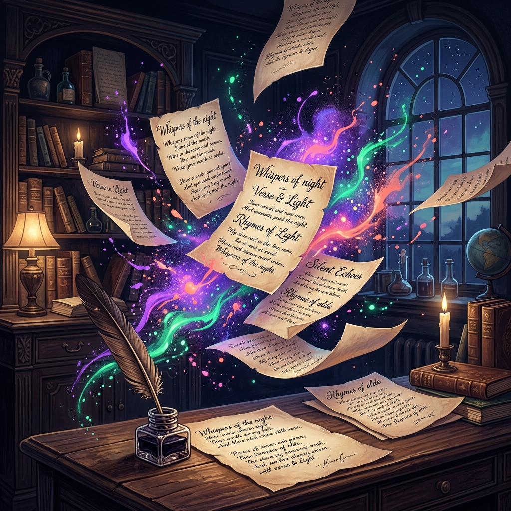

Скетч #12
...рифма кружится несмело...
...всё, что сгорело, улетело...
Ночные мысли
Звёзды падают на крыши,
Кто-то тихий нас услышит...
Я пишу эти строки на стыке времён,
Где неоновый свет в старый свиток влюблён.
Здесь чернила горят, словно звёзды в ночи,
Посиди же со мной и пока помолчи...
Архив листов
Выберите настроение, чтобы переписать реальность страницы
Осенний чай вдвоём
Дождь стучит по подоконнику дробью,
Чай остыл, но тепло нам двоим.
Осень красит листву яркой медью,
Каждый миг рядом с сердцем твоим.
Мы молчим о деталях и планах,
Укрываясь пушистым ковром.
В этих сонных кофейных туманах
Наш уютный, незыблемый дом.
Пыль библиотек
Свет луны упал на старый шкаф,
Где лежат истории веков.
Каждый автор был немного прав,
Освобождая мысли от оков.
Космос крутит вечное кино,
Звёзды пишут свой нетленный стих.
То, что нам понять не суждено,
Спит в страницах фолиантов сих.
Диета с понедельника
Я решила: всё, конец пирожным!
Листик сельдерея — мой герой.
Быть красивой и худой несложно,
Если холодильник за стеной...
Но пробило полночь. Из засады
Кот крадётся тихо, словно тать.
Мы друг другу молча очень рады,
Будем вместе булку доедать!
Неоновые крыши
Город светится тысячей линий,
Фиолетовый вечер померк.
На твоих ресницах тонкий иней,
Мы глядим на взлетающий вверх...
...Электрический свет от рекламы,
Что раскрасил проспекты в рассвет.
Среди этой безумной панорамы
Никого, кроме нас двоих, нет.
Следы на песке
Океан смывает имена,
Строит замки новые прилив.
Каждая великая страна
Помнит лишь короткий свой мотив.
Мы рисуем ветошью следы,
Думая, что пишем на века.
Но под шепот пенистой воды
Вновь пустеет мокрая строка.
Мессенджеры
«ОК», «Принято», «Понял» и смайлик.
Мы общаемся кодом из точек.
Где-то плачет потерянный смайлик
В миллионе разорванных строчек.
Раньше слали гонцов за три моря,
Ждали писем годами во мгле...
А сейчас — пара точек на споре,
И забанен твой друг на Земле.
Виктория Малыш
«Виктория Малыш — это не имя в паспорте. Это тот, кто сидит за соседним столиком в шумной кофейне и слишком чутко слушает обрывки чужих фраз»
Она ищет рифму к слову „вечность“ на помятых магазинных чеках и находит забавное в вещах, о которых принято говорить с суровым лицом. Стихи Виктории — это романтика, которая не боится повседневного быта, философия, не требующая университетских кафедр, и спасительная самоирония.
Настоящая личность автора скрыта за буквами и метафорами. В эпоху тотального самовыражения и фотоотчётов Виктория Малыш выбирает оставаться тенью на полях своей рукописи. Ведь стихи должны звучать громче, чем образ их создателя.